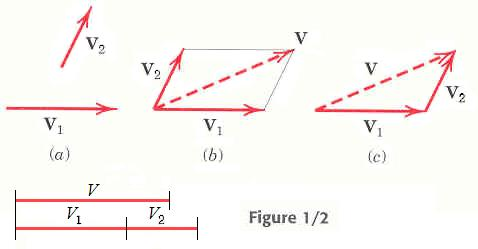
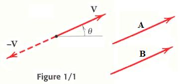
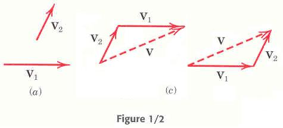
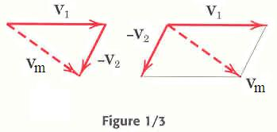
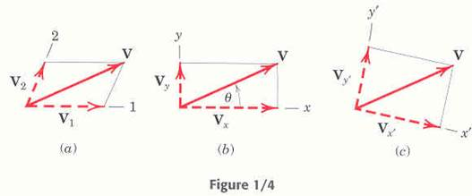
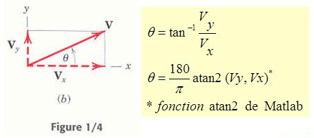
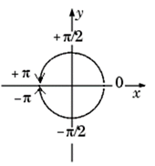

Scalaire et vecteur – Meriam chapitre
1/3
Ce chapitre porte sur la section
1/3 de Meriam Statics, 6e édition. Pour faciliter votre lecture,
certains termes du manuel sont traduits ci-dessous. La statique et la dynamique
opèrent sur deux types d'objets mathématiques que sont les scalaires et les
vecteurs.
|
Scalar
quantities are those with which only a magnitude is associated. Examples of
scalar quantities are time, volume, density, speed, energy, and mass. |
Un
scalaire est complètement défini par
sa norme. On peut
citer comme exemples, le temps, le volume, la masse volumique, l'énergie
et la masse. |
>> % (Matlab)>> temps = 15; % secondes>> volume = 4*5*3; % m³>> masseVolumiqueDuFer = 7874 % kg/m³>> energie = 4.18; % joules = 1 calorie >> masse = 70; % kg
|
Vector
quantities, on the other hand, possess direction as weIl as magnitude,
and must obey the parallelogram law of addition as described later in this
article. Examples of vector quantities are displacement, velocity,
acceleration, force, moment, and momentum. |
Un
vecteur est caractérisé par une norme et une direction.
Il suit également la loi du parallélogramme utilisée pour l'addition des
vecteurs, tels que le déplacement, la vélocité, l'accélération, la force, le
moment et la quantité de mouvement. |
>> % (Matlab)>> Fa = [3, 4] % Vecteur Force en kNFa = 3 4>> DimensionDeFa = length(Fa) % rappel, vecteur 2DDimensionDeFa = 2>> Item2deFa = Fa(2) % rappelItem2deFa = 4>> mFa = sqrt(Fa(1)^2+Fa(2)^2) % norme de Fa, un scalairemFa = 5>> Velocite = [7, 7] % vecteur en km/hVelocite = 7 7>> vitesse = sqrt(Velocite(1)^2+Velocite(2)^2) % norme, un scalairevitesse =9.8995
Trois catégories de vecteurs
Les vecteurs se classent en trois
catégories: les vecteurs libres, les vecteurs glissants et les vecteurs liés.
|
A free vector
is one whose action is not confined to or associated with a unique line in
space. For example, if a body moves without rotation, then the movement or
displacement of any point in the body may be taken as a vector. This vector
describes equally weIl the direction and magnitude of the displacement of every
point in the body. Thus, we may represent the displacement of such a body by
a free vector. |
Un
vecteur libre peut se déplacer sans
entrave dans l'espace. Ainsi, quand un corps se déplace sans rotation, le
déplacement ou le mouvement de tout point de ce corps est associé à un
vecteur. Celui-ci décrit correctement la norme et la direction du déplacement de chacun
des points du corps. On dit alors que le déplacement de ce corps est
représenté par un vecteur libre. |
|
A sliding vector
has a unique line of action in space but not a unique point of application.
For example, when an externat force acts on a rigid body, the force can be
applied at any point along its line of action without changing its effect on
the body as a whole, and thus it is a sliding vector. |
Un
vecteur glissant agit selon une ligne
précise dans l'espace, mais sans un point d'application particulier. Ainsi,
une force extérieure exercée sur un corps rigide s'applique à n'importe quel
point tout le long de sa ligne d'action sans changer l'effet sur l'ensemble
du corps. On dit qu'elle peut glisser sur sa ligne d'action. Ne pas passer à côté de ce concept fort utilisé dans
les problèmes. |
|
A fixed vector
is one for which a unique point of application is specified. The action of a
force on a deformable or nonrigid body must be specified by a fixed vector at
the point of application of the force. ln this instance the forces and
deformations within the body depend on the point of application of the force,
as weIl as on its magnitude and line of action. |
Un vecteur lié exerce une action sur un point
d'application précis. Une force agissant sur un corps déformable ou non
rigide doit être représentée par un vecteur lié au point d'application de
cette force. Dans ce cas, pour calculer les efforts et les déformations internes
du corps, on doit tenir compte du point d'application de la force, de la norme et de la ligne
d'action. |
Convention pour les équations et les diagrammes
|
A vector quantity V is represented by a line
segment, Fig. 1/1, having the direction of the vector and having an arrowhead
to indicate the sense. |
Une
quantité vectorielle V est représentée par un segment de droite,
fig. 1/1, qui a la direction du vecteur et le sens de la pointe de
flèche. |
 
Deux vecteurs sont égaux s'ils ont les
mêmes normes et directions, indépendamment de la position de leur point de
départ. Ainsi A = B.
On ne peut utiliser de l'italique ou le
gras dans Matlab, ce qui requiert d'interpréter les instructions dans leur
contexte.
>> Fa = [3, 4] % vecteur Force en kNFa = 3 4>> mFa = sqrt(Fa(1)^2+Fa(2)^2) % norme de FamFa =
5>> FaNeg = -Fa % vecteur -FaFaNeg =-3 -4
>> mFaNeg = sqrt(FaNeg(1)^2+FaNeg(2)^2) % normemFaNeg =
5
Loi du parallélogramme – addition de 2 vecteurs
|
Vectors must obey the parallelogram law of
combination. This law states that two vectors V1 and V2,
treated as free vectors, Fig. 1/2a, may be replaced by their equivalent
vector V, which is the diagonal of the parallelogram formed by V1
and V2 as its two sides, as shown in Fig. 1/2b. This
combination is called the vector sum, and is represented by the vector
equation |
L'addition
de vecteurs doit se conformer à la loi du parallélogramme. Ainsi, les
vecteurs libres Vl et V2 de la figure
1/2a peuvent être remplacés par un vecteur somme V équivalent. Il
représente la diagonale du parallélogramme dont les côtés sont V1
et V2, comme le démontre la figure 1/2b, ce qui donne
l'équation vectorielle |

>> V1 = [12, 0]V1 = 12 0>> V2 = [4, 7]V2 = 4 7>> V = V1 + V2V = 16 7>> mV = sqrt(V(1)^2+V(2)^2)mV = 17.464>> mV1 = sqrt(V1(1)^2+V1(2)^2)mV1 = 12>> mV2 = sqrt(V2(1)^2+V2(2)^2)mV2 = 8.0623>> AdditionDesNormesV1etV2 = mV1+mV2AdditionDesNormesV1etV2 =20.062
>> Constater = (mV1+mV2)-mV % est différent de zéroConstater =2.598
Loi du triangle
Addition de 2 vecteurs
|
The two vectors V1 and V2,
again treated as free vectors, may also be added head-to-tail by the triangle
law, as shawn in Fig. 1/2c, to obtain the identical vector sum V. We see from
the diagram that the order of addition of the vectors does not affect their
sum, so that V1 + V2 = V2 + V1. |
Les
vecteur libres V1 et V2 peuvent être
additionner en joignant le début de V2 à la fin de V1
pour obtenir V, comme le montre la figure 1/2c. C'est la loi
du triangle. Constater que l'ordre de l'addition n'a pas d'importance et
que V1 + V2 = V2 + V1. |
Exercice Matlab 1/2a
Additionner les vecteurs V1 = [12, 0] et V2 = [4,
7] pour obtenir V.
Pour vérifier graphiquement votre réponse,
copier les fichiers scripts .m du
répertoire /Chap1/195Tracer dans le répertoire
de travail de Matlab, par exemple D:\Matlab.
Écrire :
>>
tracer(V1,V2)
Les vecteurs V1 et V2 sont renommés F1 et
F2 par le programme « tracer » qui illustre la loi du
parallélogramme.

Loi du triangle – soustraction de 2 vecteurs
|
The difference V1 − V2
between the two vectors is easily obtained by adding −V2
to V1 as shown in Fig. 1/3, where either the triangle
or parallelogram procedure may be used. The difference Vm between
the two vectors is expressed by the vector equation |
La
soustraction des vecteurs V1 − V2
s'obtient en ajoutant −V2 à V1,
comme le montre la figure 1/3 à l'aide des lois du triangle ou du
parallélogramme. |

Exercice Matlab 1/3a
Soustraire le vecteur F2 = [4, 7] de F1 = [12,
0] pour obtenir Vm.
Vérifier votre réponse en écrivant
>>
tracer(F1,-F2)
Exercice Matlab 1/3b
Écrire les vecteurs u, v et w.

Illustrer graphiquement sur papier les opérations vectorielles :
a) u + v b) u + w c) v + w d) w - u
Vérifier vos réponses en utilisant
>>
tracer(u,v) ... tracer(w,-u)
Composantes rectangulaires d'un vecteur
|
Any two or more vectors whose sum equals a certain
vector V are said to be the components of that vector. Thus, the
vectors V1 and V2 in Fig. 1/4a are the
components of V in the directions 1 and 2, respectively. |
Toute
association de vecteurs dont la somme est égale à un vecteur V
constitue les composantes de ce vecteur. Les vecteurs V1
et V2 de la figure 1/4a sont les composantes du
vecteur V par rapport aux axes 1 et 2 . |

Exercice Matlab 1/4a
Vérifier que les composantes rectangulaires de V = [16, 7] sont
Vx = [16, 0] et Vy = [0, 7]
Vérifier votre réponse en écrivant
>>
tracer(Vx,Vy)
Direction du vecteur par rapport à l'axe des x
|
When expressed in rectangular components, the
direction of the vector with respect to, say, the x-axis is clearly
specified by the angle θ, where |
À
partir des composantes rectangulaires, on peut calculer la direction θ
d'un vecteur par rapport à l'axe des x : |

L'instruction atan2 est la tangente inverse de l'angle thêta en radians.
La réponse varie de − π à + π.

Vecteurs unitaires dans le plan
|
A vector V may be expressed mathematically by
multiplying its magnitude V by a vector n whose magnitude is
one and whose direction coïncides with that of V. The vector n
is called a unit vector. Thus, V = Vn.
|
Un
vecteur V peut être remplacé par sa norme V multiplié par
un vecteur unitaire n, dont la norme
est un et qui possède la même direction que celle du vecteur V. |
Il est habituel d'écrire les composantes
rectangulaires de V en vecteurs unitaires positifs i et j
qui indiquent respectivement la direction des axes x et y. La
somme vectorielle des composantes rectangulaires de V est
V = Vx + Vy=
Vxi + Vyj

La norme de V (ou norme) est
calculé en appliquant le Théorème de Pythagore.
Voir l'exemple
de calcul de l'angle θ, de la norme et du vecteur unitaire de V.
Exercice Matlab 1/4b
Le vecteur V = [16, 7]. Utiliser la fonction atan2
pour calculer l'angle θ en degrés.
>>
doc atan2
Rappel : π radians =
180 degrés.
Vérifier votre réponse en écrivant
>>
tracer(Vx,Vy)
Bien faire la différence entre un vecteur en informatique et un vecteur en
statique.
Un vecteur en statique est une unité mathématique définie par
plusieurs valeurs numériques.
Ces valeurs décrivent la norme et l'orientation du vecteur dans le plan ou
l'espace.
En informatique, c'est simplement une structure contenant plusieurs valeurs
numériques que l'on attribue à une variable, que l'on nomme aussi vecteur.
L'aspect sémantique du vecteur Matlab est laissé à l'utilisateur.